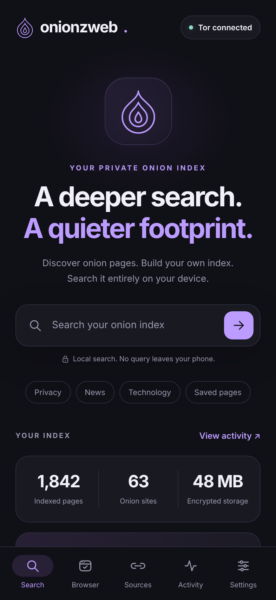
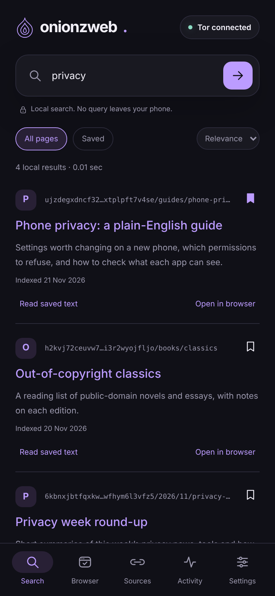
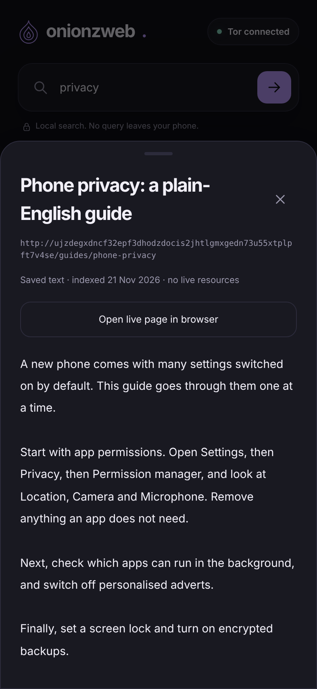
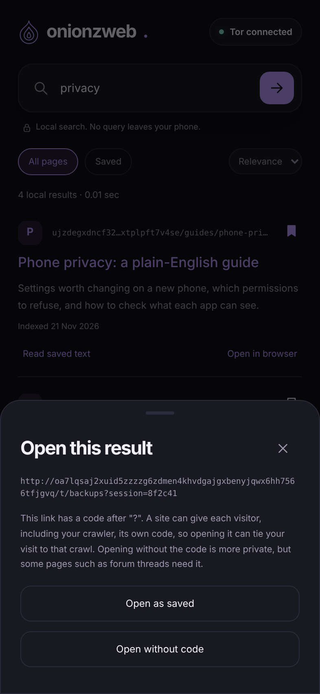
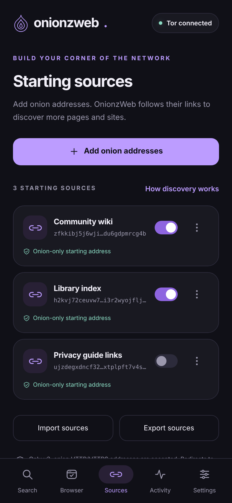
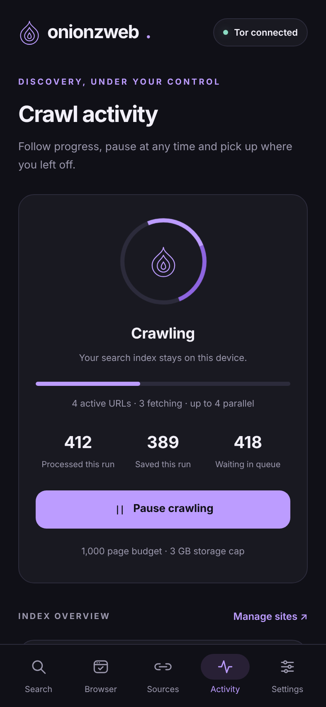
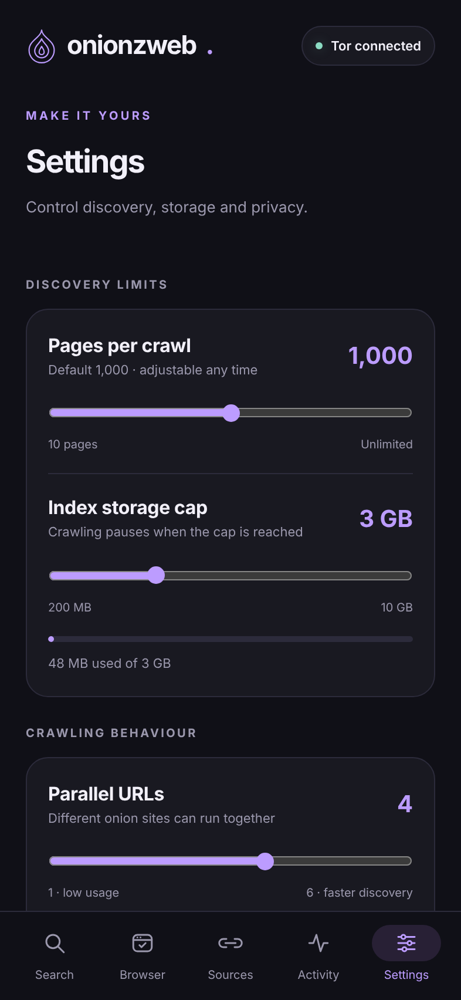

Find onion sites, then open them, without leaving the app
OnionzWeb builds a search index of onion sites on your phone, over Tor, and lets you open the results in a browser built on Tor Browser's own engine.
The browser opens onion sites only, at Tor Browser's Safest security level, with each site on its own Tor route.
Test build. This is a development build. It is not an official Tor Browser release and has not been independently audited. No app can promise complete anonymity.
Some onion sites and some uses of them are against the law. What the law says
- Version 0.1.0 development build 8
- Android 10 or later, 64-bit (ARM64)
- 155 MB
- Test build
Free, with nothing to unlock. No adverts, no account with the developer, no tracking. Compare or read the release notes.
Chrome may say the file might be harmful. It shows this for app files that do not come from Google Play. Choose Download anyway.

- Onion sites onlyNormal websites are blocked in the browser and the crawler.
- Safest levelTor Browser's strictest setting, from the start.
- Search stays on the phoneSearching makes no network requests.
- No accounts or advertsNothing to sign up for.
A look inside
These are the real search screens, drawn from the app's own interface with made-up sites and pages. The browser itself is Tor Browser's engine and needs a real phone, so it is not shown. Swipe or scroll sideways to see them all.






How it works
One app for finding onion sites and visiting them, with the same onion-only rule throughout.
Build your index
Choose starting addresses. OnionzWeb crawls them over Tor and saves the text of each page, encrypted, on your phone.
Search privately
Search the index on your phone. Nothing is sent anywhere.
Open in the browser
Open a result in the built-in browser, on its own Tor route, at the Safest level. The crawler pauses while you browse.
Everything is in, and all of it is free
Nothing below is held back for a paid tier, because there is no paid tier.
Browser
- Tor Browser's engine
- Runs at the Safest security level, with each onion site on its own Tor route.
- Onion only
- Requests and redirects to normal websites are blocked.
- Tabs
- Up to eight. Links that open a new window open a new tab.
- Check the address
- A banner shows the full address when a link takes you to another site, with a tick for your bookmarks.
Search
- Your own index
- Built on your phone over Tor and encrypted.
- Proper search
- Ranked results, phrases, words to leave out, and one site at a time.
- Saved text
- Read a page as text before opening it live.
Privacy
- New private session
- Restarts with a fresh browser profile and fresh Tor routes.
- JavaScript per site
- Off by default; allow it site by site.
- App lock and no screenshots
- Optional PIN or fingerprint; screenshots are blocked.
- Careful copying
- Copied links are hidden from clipboard previews; pages cannot read your clipboard.
Private by design, and honest about limits
No search company
Searches run on the phone and are never sent anywhere.
No servers of ours
No accounts, no analytics, no adverts and no tracking.
Not audited
A development build. Do not rely on it alone for your safety.
Use it within the law
Onion sites are reached over Tor. Most are lawful, but some are not. What you search for, open, download and do is your responsibility.
- Computer Misuse Act 1990. Getting into computers or data without permission, or making or supplying tools to do so, is a crime.
- Investigatory Powers Act 2016, as it applies to users. Using Tor is lawful in the UK, but it does not put you outside the law. Intercepting other people's communications without lawful authority is an offence.
- Protection of Children Act 1978 and Criminal Justice Act 1988, section 160. Making, downloading, keeping or sharing indecent images of children is a serious crime, wherever they are found. Report it to the Internet Watch Foundation at iwf.org.uk.
- Misuse of Drugs Act 1971. Buying, selling or supplying controlled drugs is a crime, including through an onion site.
- Fraud Act 2006. Buying or using stolen card details, accounts or identities, or tools made for fraud, is a crime.
- Terrorism Act 2006. Collecting, sharing or encouraging terrorist material is a crime.
Laws differ in other countries. If you are not in the UK, the rules where you are apply. Read the terms of use.
Installing and updating
OnionzWeb is not on Google Play, so your phone asks a couple of extra questions the first time.
Download the app file
Tap Download on your phone. The file is called OnionzWeb.apk and is about 155 MB. If Chrome says the file might be harmful, choose Download anyway. First tick the box to say you will use the app within the law.
Allow the install
Open the file. The first time, Android asks you to allow your browser to install apps. Allow it, go back and tap Install. If Google Play Protect steps in, choose More details, then Install anyway.
Updating later
OnionzWeb tells you when a newer version is out. Install the new file over the old one and everything you have saved is kept.
Version 0.1.0 development build 8, released 21 November 2026. See the release notes, or check your download.
Questions
Is OnionzWeb free?
Yes. There is no paid version, no subscription and no adverts.
Is it the same as Onionz?
No. It is a separate app with its own index, and it does not touch Onionz. It adds a built-in browser.
Can I visit normal websites?
No. OnionzWeb opens onion sites only. Use the official Tor Browser for the wider web.
Why is the file so big?
It carries Tor Browser's engine inside it. It needs a 64-bit (ARM64) phone with Android 10 or later.
Is it made by the Tor Project?
No. It uses Tor and Tor Browser's engine, but it is not made by or affiliated with the Tor Project.
How do I update it?
Install the new version over the one you have. Do not uninstall or clear its data, or the index is lost.
Find it, check it, then open it
Free, with no adverts and nothing to unlock. Made by the developer of several other free Android apps: see them all.